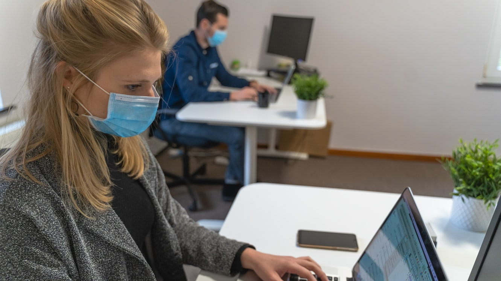

Pencegahan Covid 19

Cara pencegahan Covid 19
Untuk mencegah penyebaran dari COVID - 19 ini diantaranya:
Mengingat pandemik belum usai dan varian baru virus ini lebih cepat menyebar daripada sebelum nya, pastinya kamu khawatir dengan keluargamu terpapar virus yang dapat terbawa secara sadar maupun tidak sadar oleh dirimu pada saat kamu melakukan aktivitas di luar.
Apakah kamu bekerja di salah satu sektor yang disebutkan di atas? Atau apakah aktivitas maupun pekerjaan kamu membuat kamu masih sering bepergian keluar rumah untuk WFO? Lakukan hal Ini ketika kembali sampai rumah agar meminimalisir penularan COVID-19 kepada keluarga.
Menggunakan Masker
Apakah kamu selalu memastikan diri menggunakan masker sebelum pergi ke luar rumah ?
Kami menyarankan kamu untuk selalu menggunakan masker untuk mencegah penularan COVID-19.
Dengan menggunakan masker, kamu dapat mencegah melakukan penyebaran dan dapat terhindar dari COVID-19 yang salah satu sifatnya adalah dapat tersebar melalui udara.
Selalu Mencuci Tangan
Mencuci tangan dengan baik dan benar disertai penggunaan sabun dan air selama kurang lebih 20 detik berguna untuk membunuh virus juga kuman yang berada di tangan,
jika sabun dan air tidak ada, dapat menggunakan cairan yang mengandung setidaknya alkohol 60% seperti hand sanitizer.
Hindari Untuk Menyentuh Wajah
Ketika kita berada di luar rumah maupun berinteraksi dengan orang lain di sekitar kita, biasakan untuk tidak menyentuh bagian wajah kita seperti mulut, hidung serta mata karena bisa saja tanpa kita sadari tangan kita kotor dan mengandung virus corona pada saat digunakan menyentuh bagian wajah virus tersebut masuk ke tubuh kita
Membersihkan Permukaan yang Sering Disentuh
Jika kita berada di luar rumah, pasti kita tanpa sadar menyentuh berbagai hal yang bahkan kita tidak tahu apakah itu steril atau tidak. Hal itu juga berlaku di rumah kita sendiri. Permukaan yang sering disentuh seperti meja, gagang pintu, gadget, keyboard merupakan tempat-tempat yang berpotensi menjadi tempat menempelnya virus tersebut. Maka dari itu kita perlu untuk membersihkan secara rutin dengan alat pembersih demi mencegah penularan COVID-19.
Menghindari Penggunaan Alat Pribadi Bersama
Penggunaan alat pribadi seperti peralatan makan, minum serta handuk mulai saat ini perlu kamu gunakan untuk diri kamu sendiri demi mencegah penularan COVID-19. Kamu perlu menghindari penggunaan secara bergantian karena secara tidak sadar kamu dapat menyebarkan atau tersebar oleh orang-orang di sekitar kamu.
Menghindari Kontak Fisik Dengan Orang Sekita
Dengan menjaga jarak paling tidak sejauh dua meter dari orang lain akan membantu kamu mencegah penularan COVID-19 melalui kontak fisik. Mungkin ada momen dimana kamu menaiki transportasi umum yang mengharuskan kamu duduk cukup dekat dengan orang sekitar kamu. Hal yang kamu pastikan selalu adalah tetap mengikuti protokol kesehatan dan saling mengingatkan orang di sekitar kamu.
Jika kamu sedang bertemu rekan kerja atau teman-teman kamu pun kamu perlu memastikan bahwa kamu tidak berjabat tangan sebagai langkah untuk mencegah penularan COVID-19.
Menghindari Makan di Tempat Umum
Walaupun bekerja di luar bukan berarti kita dapat makan di tempat umum secara bebas, hal tersebut dapat dialihkan dengan memanfaatkan kemajuan teknologi yang ada dengan menggunakan jasa penyedia pengantar makanan.
Menghindari dan mencegah penularan COVID-19 ini memang butuh sebuah pembiasaan dan melakukan kebiasaan yang baru itu memanglah tidak mudah, semua butuh proses. Selain menjaga protokol kesehatan, kamu juga perlu untuk menjaga diri kamu dengan menerapkan pola hidup sehat yang akan membuat imunitas atau sistem kekebalan tubuh kamu terjaga.
Dengan mengetahui 7 tips menghindari COVID-19, kamu tidak hanya membuat diri kamu sadar bagaimana langkah untuk menghindari COVID-19. Namun, kamu juga memberikan manfaat bagi orang lain karena kamu mencegah penularan COVID-19.